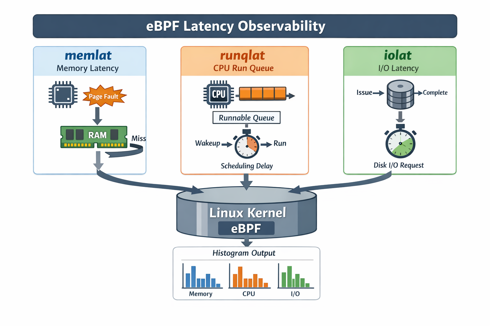

Practical Latency Observability with eBPF
Measuring CPU, Memory, and I/O bottlenecks in the Linux kernel
Overview
Key contributions
System Architecture
Measurement Workflow
Validation & Evidence
Debugging Case Study
Symptom:
Hypotheses:
Tests:
Fix:
Takeaway: